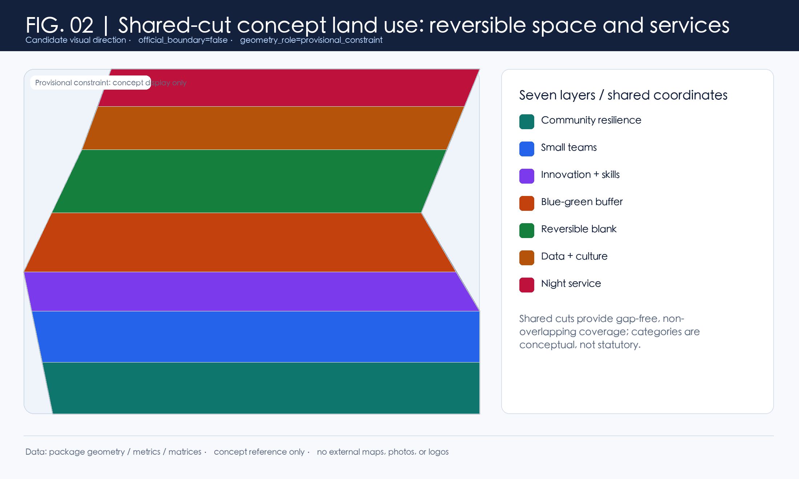
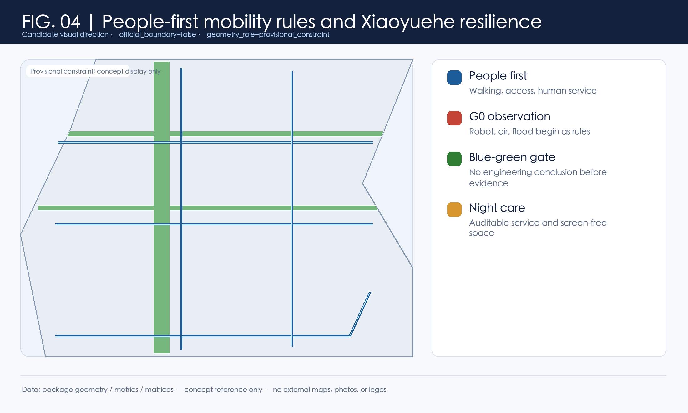
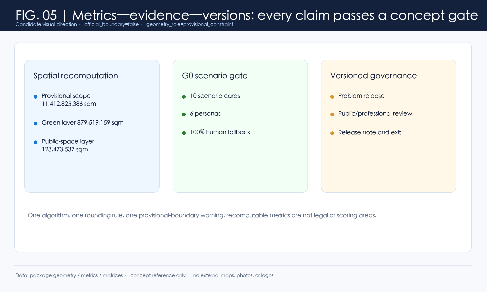

JINGZHANG HUMAN-CENTRIC AI COMMONS | Evidence and Operations Board
From an AI showcase to a city for people in the AI era. Every spatial action is a conceptual reference for professional deepening.
Boundary precision limit: official_boundary=false; geometry_role=provisional_constraint. Maps and areas serve temporary concept layers, checking, and discussion only.
Core recomputed metrics
Candidate belt identity
京张人本智城带 / JINGZHANG HUMAN-CENTRIC AI COMMONS。两条不闭合的轨迹线交会于一枚人工接管点：铁路时间、数据流和人的暂停/接管权并列。图形为投稿内的未注册概念标记，不代表主办方标识。
Five presentation-grade local maps





Six comparison cases and local ecosystem interfaces
Every case is outside the current source registry and generates questions only; none is local formal evidence.
赫尔辛基
开放三维城市模型
仅作比较；本地不存在同等模型
阿姆斯特丹
TADA 数据价值
仅作比较；不是本地制度
巴塞罗那
DECODE 公民数据讨论
仅作比较；不代表本地数据授权
新加坡
Seniors Go Digital
仅作比较；不表示本地服务已设
新加坡 one-north
研究—企业—日常服务混合
仅作比较；不转译为招商清单
多伦多滨水区
数字城市公共审议教训
仅作治理反例提示；不等同于本地项目
Zhongzhiyuan: full-stack questions and shared labs; AI-origin community: negotiation, skills, learning; service wing: knowledge and soft support; Xiaoyuehe: resilience and rules.
Six personas and fairness protocol
原住民与老人
可步行、人工服务、文化尊重、费用和信息透明
人工优先、纸本/语音替代、长者共学席位
被替代风险劳动者
可选择转岗、免费理解门槛、非污名化咨询
自愿参加、非自动筛选、退出后不留痕
夜班 AI 从业者
夜间可达、休憩、无屏绿地、心理支持转介
无持续定位、夜间反馈可匿名
小商户与一人公司
低门槛试用、共享实验、协商回迁机制
不以平台评分替代人工协商
开发者与研究者
可复现问题、清晰数据授权、测试退出机制
只用授权/模拟数据；发布可追溯
行动不便者与照护者
连续无障碍、可理解导视、人工陪伴
人工接管、低刺激和多感官说明
每个 G0 场景先发布问题、资料范围、人工负责人和退出条件。；居民/老人、被替代风险劳动者、无障碍使用者、开发者至少各占一个可见观察席。；发布前做可理解性走读；发布后留下版本记录、异议窗口和停用日期。；任何看似高效率的自动判断都不得取代人工复核、申诉或实体服务。
Ten G0 cards: space—operation—data—exit
| ID | Scenario | Space | Responsibility/fallback | Data and exit |
|---|---|---|---|---|
| SCN-01 | 社区保留率协商台 | PUBLIC-01；LAND-01 | 场地运营方建议承担接待；独立社区观察席复核；人工柜台始终保留。 | 仅用经同意的聚合反馈；投诉或退出即停止公开展示。 |
| SCN-02 | 技能再造走廊 | PUBLIC-02；LAND-03；MOBILITY-04 | 教育服务方建议组织；劳动者可跳过自动分流并申请人工咨询。 | 不以自动评分决定资格；学习数据最小化并可删除。 |
| SCN-03 | 代际共学导航 | PUBLIC-03；LAND-01 | 社区服务人员建议值守；老人及照护者席位参与每轮复盘。 | 无智能设备也可获得同等服务；语音、纸本和人工替代可用。 |
| SCN-04 | 夜间人工服务 | PUBLIC-04；LAND-07；MOBILITY-01 | 场地服务方建议负责；夜间使用者匿名反馈进入月度体检。 | 无摄像头数据前提；照明、陪行与人工求助需另行专业校验。 |
| SCN-05 | 国际服务助手 | PUBLIC-05；LAND-07 | 服务台建议负责；不对接真实签证、医疗或商业数据库。 | 公共信息优先；任何个案数据须单独授权。 |
| SCN-06 | 市政设施 Agent API | SCN-06；SERVICE-ZONE-02 | 数据责任人建议保管目录；公共观察员可审阅非敏感日志。 | 无数据授权、无目的说明、无人工接管即不得进入下一门。 |
| SCN-07 | 低速机器人公共测试 | SCN-07；SERVICE-ZONE-01；MOBILITY-05 | 测试责任人建议现场值守；行人优先且可一键中止。 | 不主张已获路权；任何接触、险情或投诉进入事故处置流程。 |
| SCN-08 | 低空物流规则沙盒 | SCN-08；GREEN-02 | 规则草案由专业安全团队与公众观察席共审。 | 无许可、噪声基线和应急处置流程即不越过纸面测试。 |
| SCN-09 | 内涝模拟观察台 | SCN-09；GREEN-01；GREEN-03 | 专业水务团队建议复核；模型不替代预警或调度。 | 输入、误差、适用范围和停用条件均应公开。 |
| SCN-10 | 算电热协同台账 | SCN-10；LAND-05；SERVICE-ZONE-02 | 能源专业团队建议审校；居民代表可理解、质询和否决数据展示方式。 | 没有负荷、热网和碳数据不输出效益、工程或接入结论。 |
Jingzhang public space, three landmarks, component library
开源里程标
在京张遗址公园概念公共空间中把待解公共问题、证据版本和人工反馈并列展示；不是纪念性建筑。
公开问题须注明来源、版本、联系人角色和撤回时间；居民可提出异议。
算法校准庭
代际共学庭内展示“算法建议—人工改写—公众反馈”的过程，不展示个人成绩。
每次展示限定在模拟/授权样本；出现误导、伤害或投诉即下线。
人工接管灯塔
以低尺度、非网红化标识提示公共服务中始终存在人工接管、申诉与退出。
只显示服务规则、辅助方式与无障碍路线；不收集人脸或行为数据。
以问题站、安静无屏绿带、人工服务和可撤回展示组成京张遗址公园 AI 公共空间的概念序列；需文保、权属和场地资料后才能深化。
The public-problem contribution ledger shows only verifiable, withdrawable roles and versions; no personal ranking, corporate display, or facial recognition.
Five concept project families and long-term operation
| ID | Family | Data precondition | Gate | Exit |
|---|---|---|---|---|
| PF-01 | 人本缓冲与社区保留 | 经同意的聚合反馈；不处理身份档案 | G0: 规则公开与共创样本；G1: 专业复核 | 投诉/不平等风险即暂停并公开修订 |
| PF-02 | 技能再造与夜间健康 | 自愿参与、最小必要 | G0: 导航原型；G1: 无障碍与夜间安全复核 | 无人工兜底或风险无法解释即退出 |
| PF-03 | 城市 API 与数据治理 | 无授权不接入；日志可核查 | G0: 纸面协议；G1: 授权与安全审查 | 授权失效/偏差投诉即冻结 |
| PF-04 | 小月河蓝绿与人机测试 | 只用模拟或授权非个人数据 | G0: 图上规则；G1: 专项安全复核 | 无许可/安全阈值/水文资料即不进入现场 |
| PF-05 | 文化、地标与全球共创循环 | 公开问题与授权作品；不使用未经许可资产 | G0: 叙事与活动原型；G1: 权利和场地复核 | 来源无法证明或误导风险出现即撤展/修订 |
问题库—开放答疑—G0 协议—人工/公众复核—版本说明；参与者只在授权范围内贡献，署名与撤回可选择。
多语问题页 → 公开证据与版本 → 专业尽调 → 自愿、可撤回的学术/社区交流；不承诺招引、资金或机构合作。
Task coverage, self-check status, sources, and assumptions
Task coverage: Announcement 1.3/1.4/1.5 and agent.1–agent.6 are mapped item by item in compliance_matrix.json. Self-check status: 本地 self_check 已通过：deterministic、spatial、visual、professional evidence 均为 PASS；临时边界提示仍属已披露的数据限制。
Sources: Registry-approved formal material and unregistered background are kept strictly separate. Assumptions: Official geometry, controls, property, transport, hydrology, heat network, cultural resources, and data authorization are next-step verification conditions.
Review path and data gaps
Review proposal.md → rendered proposal HTML → geometry/metrics/matrices → the five maps and structured assets. Until official geometry, controls, property, existing condition, transport/water/heat-network, cultural-resource, and data-authority evidence arrives, every action stays at concept-research level.